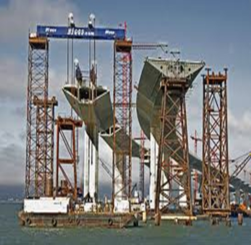

STAAD.Pro is the professional's choice for steel, concrete, timber, aluminum and cold-formed steel design of low and high-rise buildings, culverts, petrochemical plants, tunnels, bridges, piles and much more!
 STAAD.Pro is the premier FEM analysis and design tool for any type of project including towers, culverts, plants, bridges, stadiums, and marine structures. With an array of advanced analysis capabilities including linear static, response spectra, time history, cable, and pushover and non-linear analyses, STAAD.Pro provides your engineering team with a scalable solution that will meet the demands of your project every time.
STAAD.Pro Course Content